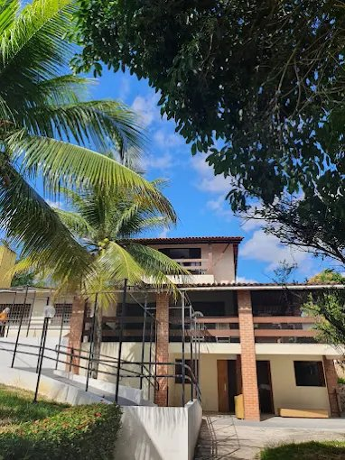
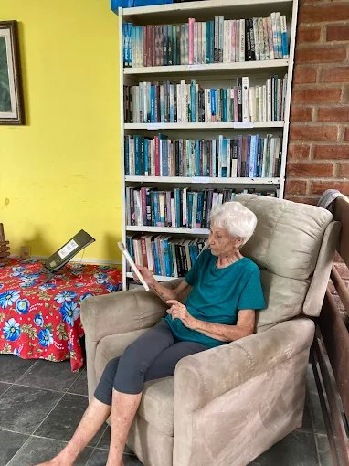
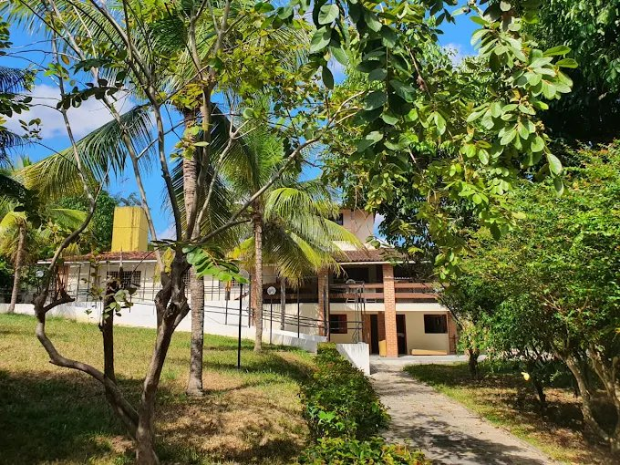
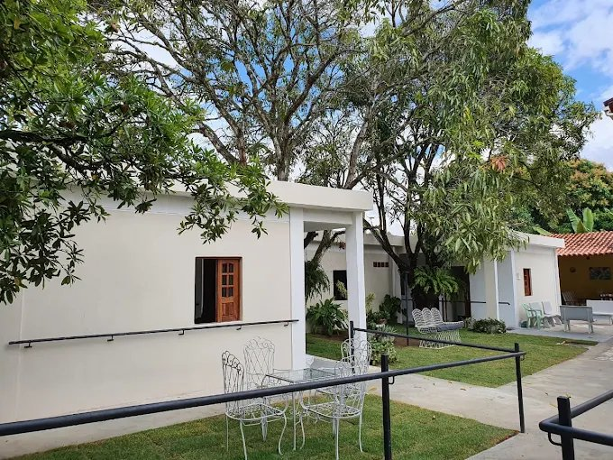
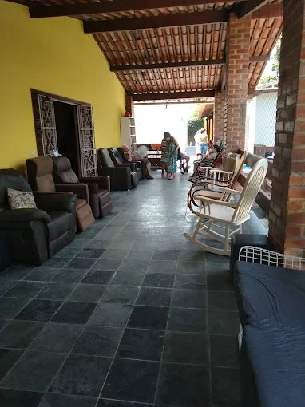
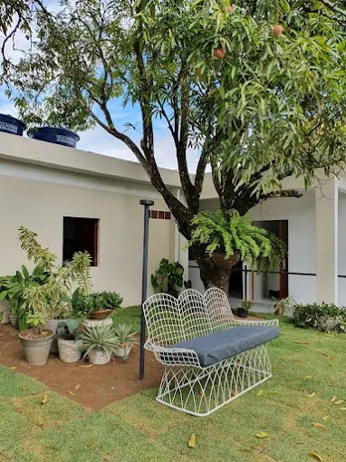
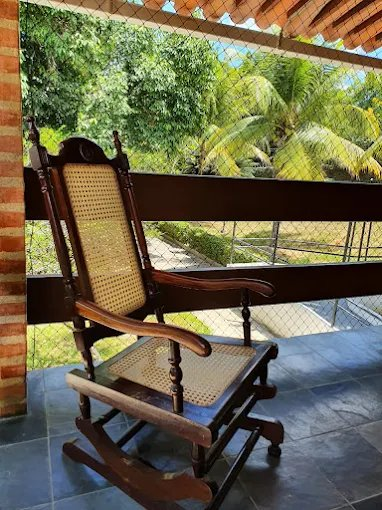

Fabíola
Sócia FundadoraCom força e dedicação, contribui para que o Novo Lar seja referência em cuidado humanizado, com o bem-estar dos residentes em primeiro lugar.
Cuidado humanizado, estrutura completa e uma equipe dedicada para proporcionar qualidade de vida, segurança e muito carinho aos seus idosos.
Oferecemos muito mais do que cuidado — oferecemos um lar de verdade para o seu familiar.
Equipe de cuidadores treinados presentes dia e noite para atender todas as necessidades com carinho e atenção.
Ampla área verde com jardins e espaços ao ar livre que promovem bem-estar e qualidade de vida.
Suporte de saúde especializado com acompanhamento médico, controle de medicação e monitoramento contínuo.
Instalações pensadas para conforto e segurança, com quartos equipados e áreas de convivência.


O Novo Lar Repouso Geriátrico é uma Instituição de Longa Permanência para Idosos (ILPI) localizada no bairro da Várzea, em Recife – PE. Com mais de 20 anos de história, nossa missão é oferecer um ambiente seguro, confortável e humanizado.
Cada residente é tratado com dignidade, respeito e alegria. Nossa estrutura foi desenvolvida para o máximo de bem-estar, com espaços verdes, quartos confortáveis e uma equipe que cuida de cada pessoa como um familiar.
O Novo Lar é dirigido por quatro mulheres extraordinárias que, com muita determinação, força, coragem e excelência, realizam todos os dias um trabalho incrível.
Cláudia, Fabíola, Morgana e Viviane formam a liderança que transforma o Novo Lar em muito mais do que uma instituição — um lugar onde os residentes se sentem realmente em casa.
Conheça nossa equipe pessoalmente
Com força e dedicação, contribui para que o Novo Lar seja referência em cuidado humanizado, com o bem-estar dos residentes em primeiro lugar.
Com determinação e visão, lidera pelo exemplo garantindo que os valores de cuidado e respeito estejam em cada detalhe do Novo Lar.
Com coragem e sensibilidade, construiu um ambiente onde cada residente é tratado com o carinho e respeito que merece.
Com excelência e comprometimento, assegura que todos os processos e cuidados do Novo Lar sejam da mais alta qualidade.
Cuidado completo para garantir saúde, bem-estar e qualidade de vida para os residentes.
Quartos individuais e compartilhados equipados com conforto, segurança e toda a estrutura necessária.
Refeições balanceadas e adaptadas, preparadas com ingredientes frescos e supervisionadas por nutricionistas.
Controle rigoroso da administração de medicamentos com registros detalhados e acompanhamento individual.
Atendimento fisioterapêutico para manutenção e melhora da mobilidade e independência dos residentes.
Programação variada de atividades recreativas, culturais e de integração social, promovendo alegria.
Acompanhamento psicológico para residentes e orientação às famílias com suporte emocional completo.
Um ambiente pensado para o conforto, segurança e bem-estar de quem você ama.





A confiança de quem já escolheu o Novo Lar é o nosso maior prêmio.
"Minha mãe está no Novo Lar há mais de dois anos e ficamos muito satisfeitos. A equipe é sempre muito atenciosa e a estrutura é excelente. Recomendo de coração!"
"Meu pai está muito bem cuidado, feliz e se sentindo em casa. As atividades são ótimas e a alimentação é muito boa. Os profissionais são dedicados e humanizados."
"A estrutura é linda, tem muito verde e os cuidadores são maravilhosos. Minha avó está muito bem e a família tem total tranquilidade. Nota 10!"
Não encontrou sua resposta? Fale conosco pelo WhatsApp — nossa equipe responde rapidamente.
Perguntar no WhatsAppAgende uma visita gratuita, conheça nossa equipe e veja de perto a estrutura que tornará a vida do seu familiar mais feliz.